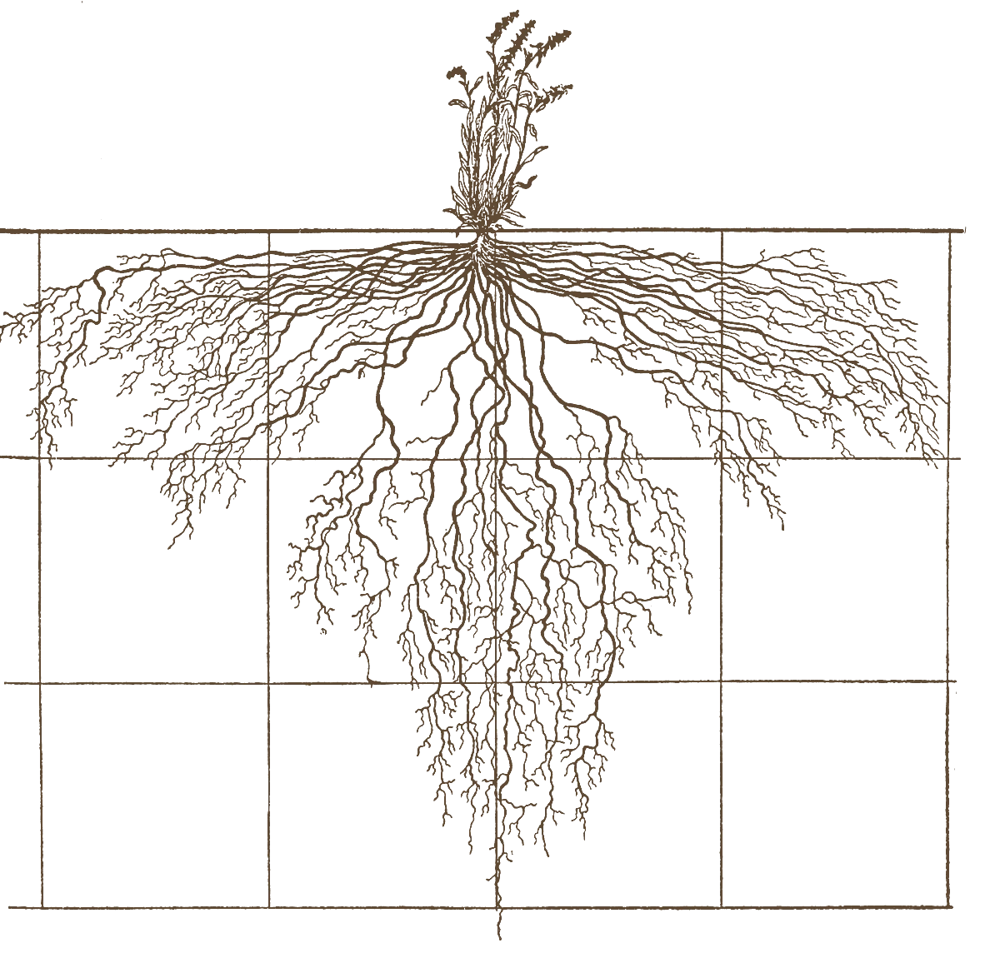

Your culture shapes which solutions you can conceive of.

what this moment asks of us
-
Speed
Things change every week. It is hard to keep up, and easy to feel overwhelmed, with little time to digest what just happened before the next thing arrives.
-
Uncertainty
None of us knows exactly where this goes. Humans are wired to want answers. Living with this much ambiguity, for this long, is new for all of us.
-
Responsibility
Choices made at the frontier affect millions of people. That weight is hard to hold alone.
-
Pressure
There is intense competition and scrutiny, and underneath that, many feel existential fears and questions about what is being built.
Under this kind of pressure we go into survival mode. We stop listening to ourselves and each other. How does this environment impact the technology we are creating?
ways to work with us
-
Workshops & events
A few hours to a few days of Presence Games. Relax, move, play, connect, and leave with a reference experience of what working together can feel like.
- offsites
- team events
- team building
- research retreats
- onboarding
-
Organisational development
An ongoing process with a team or organisation: small, safe-to-fail updates to how you meet, decide and collaborate.
- cultural iteration
- meeting & decision design
- culture experiments
- team formation
-
Leadership & coaching
Space to think clearly and stay grounded when the stakes are high.
- leadership development
- trainings
- coaching
- hard conversations